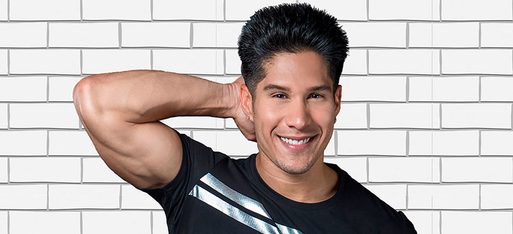

Chyno Miranda
Por: Jerrika Lozano
 @chynomiranda
@chynomiranda 
 Chyno Miranda
Chyno MirandaLuego de -Me provoca- su primera canción de solista, y que ya tiene más de 9.8 millones de vistas en la red social YouTube, el cantante venezolano escribió, produjo y grabó el tema -El Peor-.
Estrena este nuevo sencillo junto a J. Balvin; el tema de esta canción es sobre la vida de una fanática, que estudia el día a día de su artista favorito para poder entrar en la casa de su ídolo y conocer los secretos más íntimos, esta canción se suma a los 18 temas que conforman la nueva producción discográfica de Chyno Miranda, titulada “Chévere”, que será lanzada al mercado en los próximos meses.
{kind=link}
Revista Boga: ¿Esperabas tanto éxito con el tema “Quédate Conmigo”?
Chyno Miranda: Esta canción es bastante especial, siempre fue mi deseo que el tema tuviese mucho éxito, gracias a Dios conté con la bendición de tener un público maravilloso, que la disfrutó, bailó y hasta el día de hoy se sigue escuchando así que estoy muy contento con esta canción.
RB: ¿Cómo recibiste la noticia de tu disco de platino en Estados Unidos?
CM: Recibí la noticia en la disquera, estaba en una reunión cuando salió a la luz el tema de las ventas de la canción, aunque en ese momento no demostré la emoción, por dentro estaba que hacia una fiesta, de verdad estaba muy feliz.
RB: ¿Se han cumplido las expectativas que tenías cuando decides iniciar como solista?
CM: Pienso que el que mucho espera mucho se decepciona, realmente estoy disfrutando esta nueva etapa, no me estoy planteando límites en mi carrera ni metas materiales, lo que quiero es ser feliz, hacer feliz a mis fanáticos y crear buena música. Lo que Dios me brinde y pueda aportar a mi carrera será una bendición y recibido con mucha humildad.
RB: Háblanos del poderoso mensaje que tiene tu sencillo “Sin Trucos de Belleza”
CM: Esta canción tiene un mensaje muy positivo, el tema de tener un balance en la vida entre lo espiritual y lo físico es muy importante, no excederse ni en una cosa ni en la otra, hay que tener equilibrio, no quiero decir que las mujeres no se arreglen, me encanta una mujer que este arreglada pero de qué sirve si esa mujer es bellísima pero por dentro no tiene nada que ofrecer, ese es el mensaje de este tema, dejar esa duda en la mente de los jóvenes que viven en una época de mucha superficialidad.
RB: Cuéntanos de tu nuevo sencillo -El Peor-
CM: Estoy muy contento porque es una canción que realicé hace mucho tiempo con grandes amigos como Servanto Primera, Yhonny Atella y claro comparto en ft. con J Balvin a quien respeto mucho, el video clip lo hicimos en la ciudad de Nueva York, fue un trabajo hecho con dedicación, pasión y mucho esfuerzo, es un proyecto excepcional de muy buen nivel musical, “tienen que ver el video parece una película”.
RB: ¿Por qué elegiste nuevamente a Nuno Gómes para rodar el video de este tema?
CM: Considero que en esta nueva etapa los directores de videos tienen una magia especial para contar historias, en esta ocasión tenía la certeza de que Nuno era la persona idónea, hay otros estilos de directores que tienen fortalezas distintas, pero en este caso era la persona indicada, anteriormente trabajamos juntos y haber logrado tantos resultados positivos no me quedaba duda alguna de que la oportunidad tenía que dársela a él.
RB: ¿Qué podremos encontrar en tu primer álbum como solista?
CM: Van a encontrar música variada y positiva, el álbum se llama Chévere, aun no hay fecha confirmada de lanzamiento pero no se preocupen va ser pronto, solo espero que les guste, fue un trabajo hecho hace más de un año y medio y verlo listo es un sueño hecho realidad.
RB: Cuéntanos ¿Dónde te estarás presentando y cuáles son tus planes a corto plazo?
CM: Mi plan a corto plazo es darle durísimo a la promoción de -El Peor- enfocándome en hacer que mi carrera como solista crezca, en este momento siento que todo lo que está pasando es un reto en mi carrera y lo asumo con mucha pasión y profesionalismo.
Chyno no para de trabajar y estamos seguros que seguiremos escuchando y coreando sus nuevos temas, apenas inicia una nueva etapa como solista en la cual le auguramos grandes éxitos.